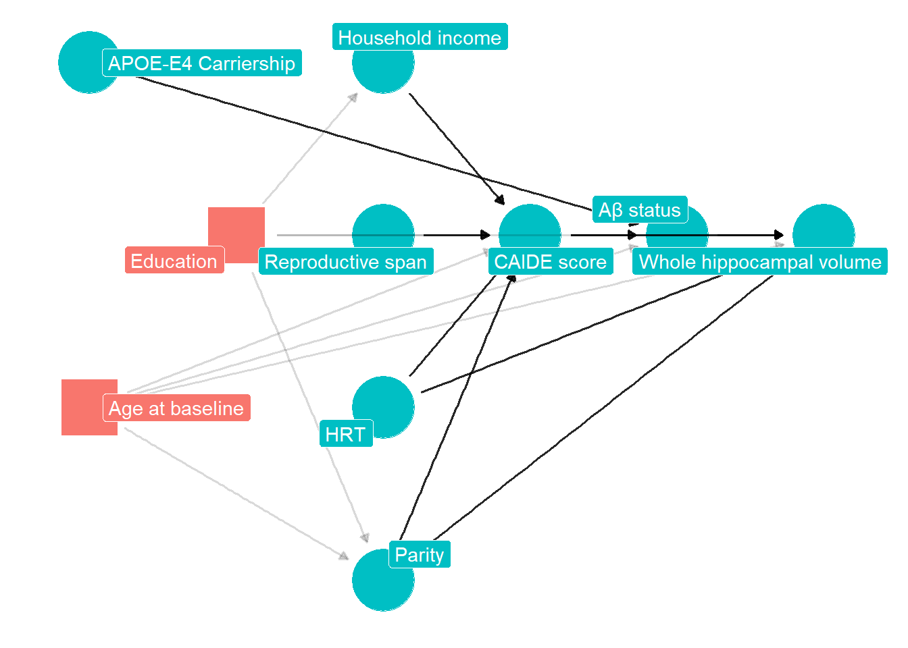
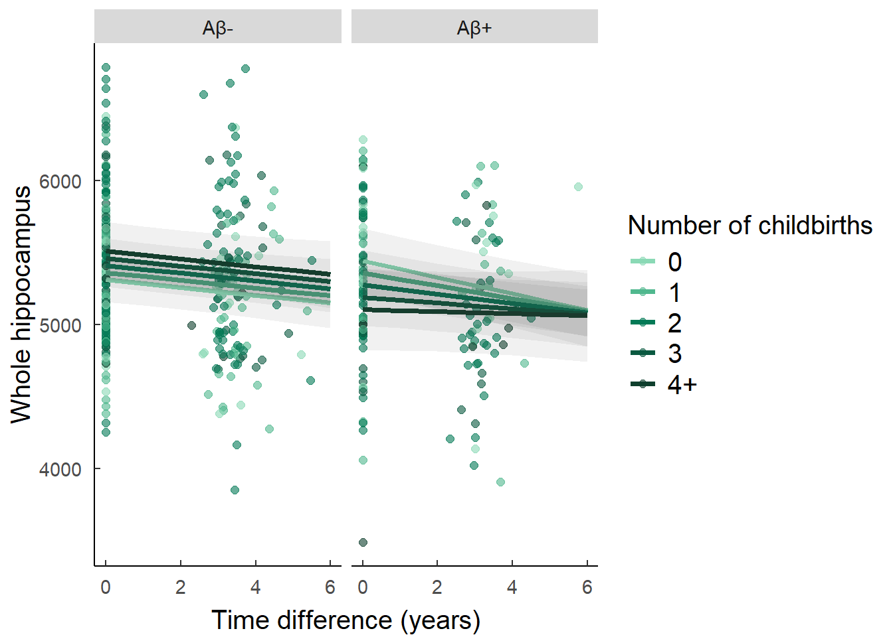
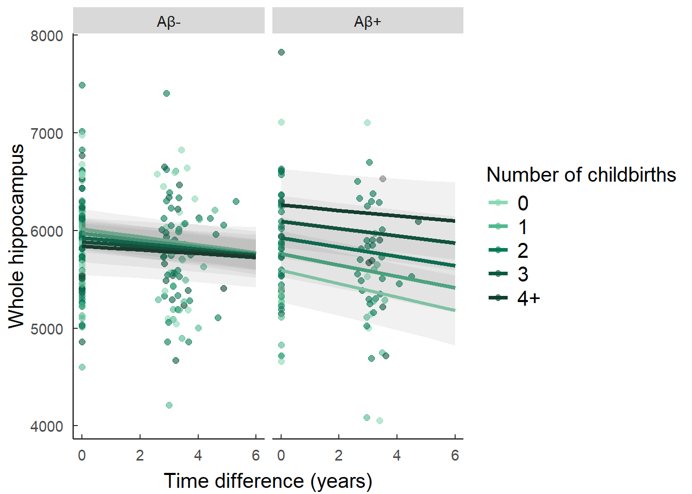
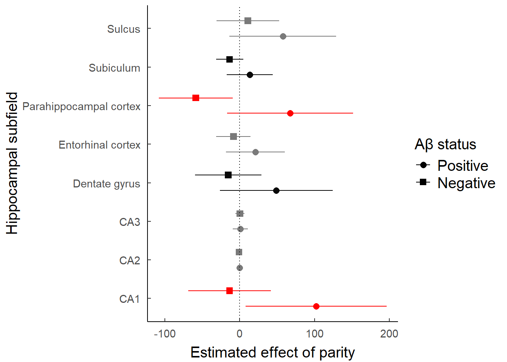

# Lancet Guidelines# Be up to 3500 words (4500 for randomised controlled trials) with 30 references (the word count is for the manuscript text only) • Include an abstract (semi-structured summary), with five paragraphs (Background, Methods, Findings, Interpretation, and Funding), not exceeding 300 words. Our electronic submission system will ask you to copy and paste this section at the “Submit Abstract” stage • For randomised trials, the abstract should adhere to CONSORT extensions: abstracts (see Lancet 2008; 371: 281–83) • When reporting Kaplan-Meier survival data, at each timepoint, authors must include numbers at risk, and are encouraged to include the number of censored patients. • For intervention studies, the abstract should include the primary outcome expressed as the difference between groups with a confidence interval on that difference (absolute differences are more useful than relative ones). Secondary outcomes can be included as long as they are clearly marked as secondary and all such outcomes are reported • Use the recommended international non-proprietary name (rINN) for drug names. Ensure that the dose, route, and frequency of administration of any drug you mention are correct • All accepted Articles should include a link to the full study protocol published on the authors’ institutional website (see Lancet 2009; 373: 992 and Lancet 2010; 375: 348) • We encourage researchers to enrol women and ethnic groups into clinical trials of all phases, and to plan to analyse data by sex and by race# # All research papers (including systematic reviews/meta-analyses) submitted to any journal in The Lancet family must include a panel putting their research into context with previous work in the format outlined below (see Lancet 2014; 384: 2176–77, for the original rationale). This panel should not contain references. Editors will use this information at the first assessment stage and peer reviewers will be specifically asked to check the content and accuracy • The Discussion section should contain a full description and discussion of the context. Authors are also invited to either report their own, up-to-date systematic review or cite a recent systematic review of other trials, putting their trial into context of the review
1 Abstract
300 words
2 Introduction
3 Methods
3.1 Study design
This study was realised within the context of the The ALFA+ project, a longitudinal observational cohort of healthly middle aged adults. This project currently takes place in the city of Barcelona, Spain, at the BarcelonaBeta Brain Research Center. Visit 1 was collected between … and …, and Visit 2 between … and … Visit 3 is still undergoing. The ALFA study protocol was approved by the Independent Ethics Committee Parc de Salut Mar Barcelona (and registered at Clinicaltrials.gov, NCT01835717). For a more detailed description of the cohort see Molinuevo et al.[1].
3.2 Participants
In brief, inclusion criteria were being cognitively normal, Spanish and/or Catalan-speaking, being aged between 45 and 74 years and agreing with the study procedures and tests. A close relative was involved in the volunteer’s functional evaluation and both of them had to grant their written informed consent. Exclusion criterias Exclusion criteria were (1) Cognitive performance falling outside the established cutoffs, (2) a Clinical Dementia Rating above 0, (3) major psychiatric disorders (according to DSM-IV-TR), (4) Severe auditory and/or visual disorder, neurodevelopmental and/or psychomotor disorder, (5) Significant diseases that could currently interfere with cognition, (6) neurological disorders, (7) Brain injuries and (8) a suspected pattern of family autosomal dominant AD.
In addition to the above exclusion criteria, women with history of cardiovascular related gestational disease, such as preeclampsia, were excluded from our sample for analysis.
Participants were recruited via advertisement campaigns in newspapers and followed-up via email/phonecalls.
3.3 Procedures
3.3.1 Demographics
Demographic data was collected via oral questions administered by a clinician. Sex was self reported, and participants could choose from three options: male, female, or … Race and ethnicity were also self-reported.
Reproductive variables, such as number of biological kids, age at menopause, age at menarche and number of abortions, were self-reported at the baseline visit. In the subsequent visits, participants were also asked about hormonal replacement therapy.
Social variables such as years of education, household income, occupational attainment and civil status were also self-reported at baseline visit.
3.3.2 MRI acquisition
MRI scans were acquired on a in-house 3.0 T scanner (GE Discovery MR750 W 3 T) using the same protocol for all participants, which included one T1- and three T2- weighted sequences. The 3D-T1w sequence was designed with an isotropic voxel size of1mm3 and a matrix size of256x256x160 (TR/TE/TI = 8.0/3.7/450 ms, NSA = 1, flip angle = 8°). Three 3D-T2w sequences, with a voxel size of1 mm× 1 mm× 3 mm, were also used: fluid attenuation inversion recovery (FLAIR: TR/TE/ TI = 11,000/90/2600 ms, flip angle = 160°), fast spin echo (FSE: TR/TE = 5000/85 ms, flip angle = 110°) and, gradient echo (GRE: TR/TE = 1300/23 ms, flip angle = 15°). All scans were visually assessed to verify their quality and to detect incidental findings by a trained neuroradiologist and have been reported elsewhere (Brugulat-Serrat et al. 2017). At visit 1, ten participants were excluded due to the presence of a meningioma, as well as 37 participants due to susceptibility, motion artefacts or segmentation problems, resulting in a total of 561 images available for subsequent analysis. At Visit 2, … The medial temporal lobe atrophy was assessed by Medial Temporal Atrophy scale [2].
3.3.3 Hippocampal segmentation
Hippocampal subfield volumes were automatically calculated by FreeSurfer 7 using whole hippocampal segmentation provided by the standard ‘recon-all’ pipeline, which renders the most standard and widely-used volumetric estimation of hippocampal volumes. The subfields were delimited as following: CA1, CA3, CA4, GC-ML-DG, molecular layer, fimbria, parasubiculum, subiculum, presubiculum, HATA, fissure, and tail. However, the fissure was removed from the analysis because of its lack of particular relevance to our topic.
Repoduction of the analysis using ASHS segmentation can be found in the Appendix section.
Freesurfer 7 segmentation pipeline.
3.3.4 Lumbar puncture
CSF was collected by lumbar puncture between 9 and 12 a.m. in polypropylene tubes. Samples were processed within 1 hour and centrifuged at 4°C for 10 minutes at 2000 g, stored in polypropylene tubes and frozen at -80°C. Core AD biomarkers (namely Ab42, Ab40, total Tau, and p tau) and other molecules of interest (such as YKL-40, neurogranin and Ab oligomers) were analyzed and determined in Prof. Kaj Blennow’s laboratory (Institute ofNeuroscience and Physiology, Department of Psychiatry and Neurochemistry, The Sahlgrenska Academy at the University of Gothenburg, Sweden).
3.3.5 Cognitive measures
The Preclinical Alzheimer Cognitive Composite (PACC) was developed to detect subtle cognitive changes in individuals who may be in the pre-clinical stages of AD [3], and includes elements of the Memory Binding Test, the Coding subtest of WAIS-IV, and semantic fluency. Z-scores were computed for Visit 1 and 2.
3.4 Statistical analyses
This analysis is opportunistic, in the sense that the ALFA+ cohort was designed to provide data for a wide range of questions. Consequently, this study sample size limits the kind of analysis we are able to perform. Because of this, we chose not to include results from stratified analysis in this paper because of a high chance of yielding type II errors.
3.4.1 Linear regression models
Statistical analyses were carried using R v4.5.1. Our exposure variables included parity, time and Aβ positivity. Parity was defined as number of biological children and treated as a continuous predictor. Time was assessed as number of days between either MRI scans or cognitive testing sessions at visit 1 and 2. Aβ positivity was defined using a CSF Aβ42/40 ratio inferior to 0.071. All analyses were stratified by sex.
To identify other potential confounders in our primary analyses, we used directed acyclic graph (DAG) methodology to aid with covariate selection. Using Pearl’s backdoor criteria, we decided to covary for education in all our analyses given that the effet of this variable on both the exposure and outcome variable, therefore making it a cofounding variable in our analyses along with age at baseline. All linear regressions were also adjusted for age at baseline, APOE-4 status, time and Aβ status when not part of the interaction. Linear regressions with hippocampal subfield volumes as outcomes were adjusted for Total Intracranial Volume (TIV). p-values were adjusted using the False Discovery Rate (FDR) method.

We first carried out linear mixed-effect models including parity and time as exposure and hippocampal volume as outcome. AD-specific biomakrers were then introduced as a moderator. These analyses were reproduced using PACC as outcome. For sensitivity analyses, we performed the same linear regressions but stratified by Aβ positivity. We also tested the inclusion of other covariates to examine the effect of AD-related biomarkers, female reproductive health and social factors on our outcomes. Mediation analyses were performed…
Data imputation methods were implemented using the mice package in R (v.3.18.0) on covariates, but not exposure or outcome variables. For continous variables, predictive mean matching with 5 donors was used. For categorical variables, logistic regression was used.
4 Results
4.1 Descriptive results
Number of childbirths
N
0
N = 661
1
N = 931
2
N = 2141
3
N = 471
4
N = 111
5
N = 11
p-value2
Age at first visit, Mean (SD)
432
58.5 (55.3, 63.1)
62.5 (57.6, 64.9)
62.5 (58.8, 65.1)
61.2 (57.7, 64.7)
63.9 (60.4, 67.2)
56.0 (56.0, 56.0)
<0.001
Aβ status, Count (%)
383
0.3
Aβ-
41 (71%)
59 (71%)
114 (62%)
32 (70%)
6 (55%)
0 (0%)
Aβ+
17 (29%)
24 (29%)
70 (38%)
14 (30%)
5 (45%)
1 (100%)
APOE-E4 carrier, Count (%)
431
0.14
Carrier
33 (51%)
44 (47%)
129 (60%)
27 (57%)
4 (36%)
0 (0%)
Non-Carrier
32 (49%)
49 (53%)
85 (40%)
20 (43%)
7 (64%)
1 (100%)
Time between visits (years), Mean (SD)
353
3.24 (3.01, 3.47)
3.34 (3.13, 3.58)
3.15 (2.97, 3.44)
3.24 (3.03, 3.65)
3.41 (3.03, 3.76)
3.51 (3.51, 3.51)
0.039
Education (years), Mean (SD)
432
15.5 (12.0, 18.0)
12.0 (11.0, 17.0)
12.0 (10.0, 17.0)
16.0 (11.0, 18.0)
12.0 (8.0, 17.0)
18.0 (18.0, 18.0)
0.006
1 Median (Q1, Q3); n (%)
2 Kruskal-Wallis rank sum test; Fisher’s exact test
432 participants from the ALFA+ project were included in our analyses, of which 254 are women. Visit 1 included MRI data from 411 participants, cognitive testing from 417 participants and CSF biomarkers from 400 participants. Visit 2 included MRI data from 353 participants, cognitive testing from 367 participants and CSF biomarkers from 277 participants. Average time between visits was 3.32 years.
(Flowchart?)
Table 1 shows demographics and characteristics of the ALFA+ cohort for all aprticipants included in Visit 1, grouped by parity. Participants with higher parity were significantly more likely to be older. No difference was seen between groups regarding Aβ status and APOE-ε4 carriership.
4.2 Whole Hippocampal volume
We found no significant independent effect of parity on whole hippocampal volume. However, a significant parity and Aβ positivity interaction was found (β = -134.143, p = 0.041), such that Aβ- women showed a positive relationship between parity and hippocampal volume, whilst Aβ- women showed the opposite (Figure X). No significant interaction with time was found, indicating that this effect appears constant over visits.

Power analysis of our main linear regression yielded a value of 0.37. Therefore, we chose not to include stratified analysis by Aβ status, due to the high possibility of a type II error.
No main effect of parity was found in men but interestingly,the interaction of parity and Aβ significantly impacted whole hippocampal volume (β = 210.013, p = 0.02), but this time in an opposite pattern (Figure X).

4.3 Cognitive trajectory
No significan main effect of parity on PACC score was found. However, after moderation by Aβ status, a modest yet significant effect was found (β = -9.636^{-5}, p=0.033). Results suggest that whilst parity and Aβ status did not seem to affect PACC score at time = 0, Aβ- women appeared to show a positive relationship between parity and PACC score as time went on, and Aβ+ women the opposite.
4.4 Post-hoc analyses
4.4.1 Hippocampal subfields
Similarly, no significant main effect of parity was found in any of the subfields. However, the interaction between Aβ status and parity showed a significant effect on dentate gyrus volume (β = -56.586, p = 0.048), and a trend in the subiculum (β = -24.625, p = 0.068). The direction of the effect followed the same as for the whole hippocampus, where Aβ- women showed a positive relationship between parity and hippocampal volume, whilst Aβ- women showed the opposite (Figure X)
In men, exploratory analyses of the subfields showed a significant effect of the interaction between Aβ and parity in the CA1 (β = 115.474, p= 0.018) and the parahippocampal cortex (β = 125.993, p= 0.004), and a trending effect in the dentate gyrus (β = 64.284, p= 0.097) and the subiculum (β = 26.813, p= 0.091). Similarly to the effects found in the whole hippocampus, the direction of the interaction is reversed in men, such that Aβ+ men show a positive relationship between parity and subfield volume, and Aβ- men show the opposite (Figure X).

5 Discussion
We aimed to investigate the impact of parity on hippocampal subfield volumes and relation to AD pathology in post-menopausal women at risk of AD and men who share similar age and AD risk. Our results suggest that…
Parity interacts with amyloid pathology to influence neurodegeneration and cognition. In our sample, parity was not associated with hippocampal volume size directly but appeared to moderate the effet of amyloid accumulation on hippocampal volume. In the context of low amyloid, female participants appeared to exhibit greater volumes especially in the subiculum and dentate gyrus area.
Interestingly, introducing variables that serve as proxy for hormonal exposure, such as HRT use and reproductive span, seemed to explain some of this effet in the dentate gyrus area but not in the subiculum.
Similarly, parity does not impact PACC score independently but appears to moderate the impact of amyloid pathology on cognitive trajectory. In the context of low amyloid, female participants with higher parity showed lesser cognitive decline. However, this effect was very small, especially compared with the effect of other variables, like education. Whilst including covariates related to sex steroid exposure did not modify this relationship, including household income did.
mention liisa galea’s recent findings and how we don’t find an interaction with APOE?
The biggest limitation of this study is the lack of hormonal measurements. By only using proxy measurements, we are only able to estimate the role of sex steroid hormones in the results found, but cannot make any definitive conclusions. It is very possible the role of sex hormones in our observatioins was underestimated due to this missing variable. In addition to this, the ALFA+ cohort is very homogeneous: participants are majoritarily caucasian whites, from middle and upper-middle class background, who were selected due to their impeccable health records. Therefore, we must use cuation when generalising our results to a wider population. Additionally, our sample lacked highly multiparous individuals. Previous studies on the effect of parity on cognition and neurodegeneration have found an inverted u-shaped relation between parity and outcome measures, indicating that our lack of women having had more than 4 children might be leading to an incomplete picture of the phenomenon.
6 Appendix
6.1 Analysis reproduction with ASHS
[1]
Molinuevo JL, Gramunt N, Gispert JD, Fauria K, Esteller M, Minguillon C, et al. The ALFA project: A research platform to identify early pathophysiological features of Alzheimer’s disease. Alzheimer’s & Dementia: Translational Research & Clinical Interventions 2016;2:82–92. https://doi.org/10.1016/j.trci.2016.02.003.
[2]
Scheltens P, Weinstein HC, Leys D. Neuro-imaging in the diagnosis of Alzheimer’s disease I. Computer tomography and magnetic resonance imaging. Clinical Neurology and Neurosurgery 1992;94:277–89. https://doi.org/10.1016/0303-8467(92)90175-3.
[3]
Donohue MC, Sperling RA, Salmon DP, Rentz DM, Raman R, Thomas RG, et al. The Preclinical Alzheimer Cognitive Composite. JAMA Neurology 2014;71:961. https://doi.org/10.1001/jamaneurol.2014.803.